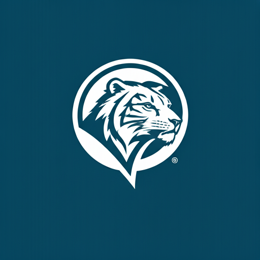

学术背景 / My Background
就读院校

我能帮你 / I Can Help With
留学文书指导 (Essays & Personal Statements)
学术与选课规划 (Academic Planning)
背景与活动提升 (Profile Building)
综合咨询 (Mentorship & Strategy)
关于我 / About me
因为 Tufts 无法提供我想要的学术集中方向（Concentration）。学校的人类学分支唯独缺失了“语言人类学”。尽管大一时我保持了 4.0 的满分 GPA，并跨专业在语言学和音乐学系做助研，但没有就是没有。
在转学申请中，我摒弃了本科申请时花里胡哨的风格，将文书重心牢牢放在“为什么原学校无法满足我，而新学校可以”的硬核逻辑上。同时，我精准锁定了西北大学一个可以面向全芝加哥播放的 Podcast 社团——这种庞大的媒体调性是传统学术名校无法提供的。最终，全方位的精准匹配让我成功在转学早申中一举圆梦西北。
我也曾面临挑战 / Challenges Confronted
早申梦校被拒的落差 —— 高三早申西北大学被 deferred 后最终遭遇 reject，带着对梦校“跨学科与务实氛围”的淡淡不甘进入大一。
那就去西北的对岸！ —— 大一保持 4.0 满分 GPA，精准死磕转学策略，全方位匹配，最终早申一举圆梦西北！
跨文化叙事的断层原学校专业资源的完全断层 —— 进入 Tufts 后发现学校完全没有分出“语言人类学”这一细分方向，只提供文化、生物人类学和考古，学术野心无法被满足
没有资源，就自己创造资源！ —— 跨专业在语言学和音乐学系做助研、创立面向全芝加哥播放的 Podcast 社团，用独特的跨学科背景反哺申请文书。
转学文书创作者的心态博弈 —— 曾一度死磕本科风格的 Creative 文书而自我怀疑，在与中介反复碰撞后才痛苦扭转思维，打破对 Personal Statement 的传统刻板认知。
打破伪痛点，升级硬核逻辑！ —— 摒弃花里胡哨，将重心牢牢放在“为什么原学校无法满足我，而新学校可以”的降维逻辑上。
我的战绩 / My Track Record
连续两年满绩 ➔ GPA 4.0 / 4.0
我在严苛的学术给分体系下，连续两年保持全科满绩。不仅证明了极强的学术适应力，也摸透了名校教授的拿分与期末考核逻辑。
Pioneer 学术科研 ➔ 与西北大学教授科研
入选高含金量 Pioneer 研究项目。在西北大学终身教授的直接指导下独立开展课题，获得一封极具学术分量的顶级推荐信。
两段核心学术助理 ➔ Research Assistant (RA)
深度参与两段高强度学术课题，协助教授处理核心数据建模与文献综述，具备独立驾驭跨学科、冷门交叉学科科研的底层能力。
学生录取成果 / My students‘ offers
大型公立大学 ➔ Top 15 圣路易斯华盛顿大学
在公立大课、科研经历一片空白的困境下，通过全程套磁与长线规划，硬生生卡下一个极其珍贵的跨学科科研助理（RA）席位。
美本 Top 30 ➔ 常春藤 康奈尔大学
手握 3.9+ 高分却遭申本拒信，我们彻底剥离其浮夸的文书风格，死磕官网隐藏资源，重塑出真诚、成熟的学者形象。
学生反馈 / Students reviews
学姐在转学规划上非常专业，尤其是在挖掘我个人特质和联系教授推荐信方面给了我极大的启发。在她的指导下，我成功拿到了理想大校的录取。